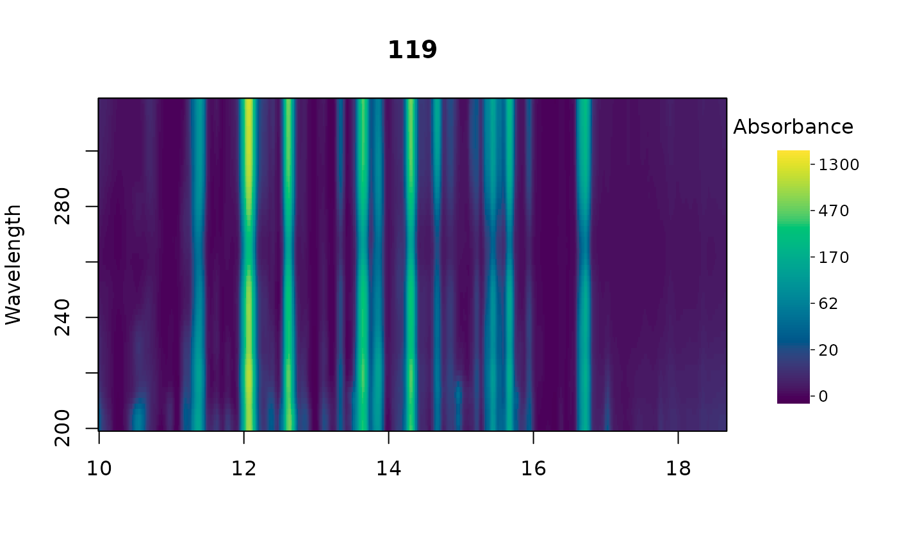
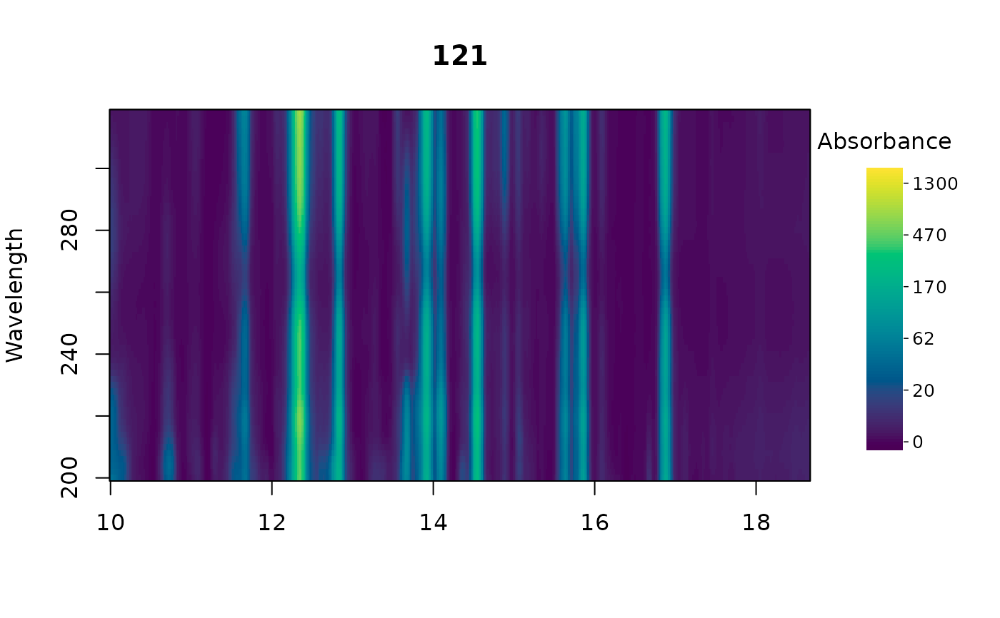
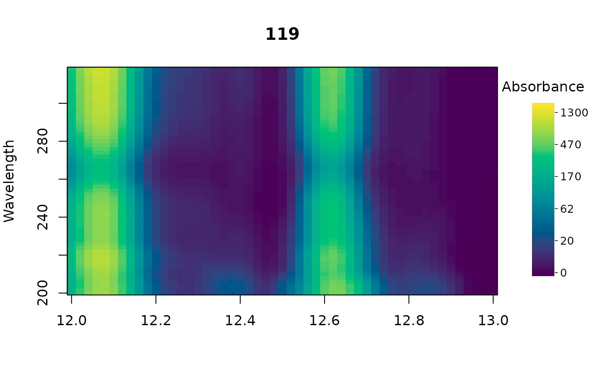

Plots a single multi-wavelength chromatogram as an image, with retention time on the x axis, wavelength on the y axis, and color encoding absorbance.
Usage
plot_chrom_contour(
x,
idx = 1,
xlim = NULL,
ylim = NULL,
scale = c("asinh", "linear"),
zlim = NULL,
show_legend = TRUE,
title = NULL,
xlab = "",
ylab = "Wavelength",
...
)Arguments
- x
A list of chromatograms in matrix format (timepoints × wavelengths) or a
peak_tablecontaining a pointer to a list of chromatograms accessible in the current environment.- idx
Name or numerical index of the chromatogram to plot. Defaults to the first.
- xlim
Range of retention times to plot.
- ylim
Range of wavelengths to plot.
- scale
Color scale:
"asinh"(the default) or"linear".- zlim
Range of absorbance values spanned by the color scale. Values outside it are drawn in the end colors. Defaults to the range of the plotted region.
- show_legend
Logical. Whether to display a color bar. Defaults to
TRUE.- title
Title for plot. Defaults to the name of the chromatogram;
""omits it.- xlab
X label.
- ylab
Y label. Defaults to
"Wavelength".- ...
Additional arguments to
graphics::image(), e.g.useRaster = TRUEto speed up rendering of large chromatograms on a regular grid.
Details
With scale = "asinh" (the default), color follows asinh(x / s), where
s is 1/100 of the largest absolute value in the plotted region, or in
zlim when it is given. The scale is linear near zero and logarithmic
above s, so peaks up to about 100 times smaller than the tallest one stay
visible. The color bar is labeled in absorbance units.
By default each plot is scaled to its own data, so colors cannot be
compared between plots. Pass the same zlim to every plot to put them on
one scale (see examples).
See also
Other visualization functions:
boxplot.peak_table(),
mirror_plot(),
plot.chrom_list(),
plot.matched_peak_list(),
plot.peak_list(),
plot.peak_table(),
plot_all_spectra(),
plot_chroms(),
plot_chroms_heatmap(),
plot_spectrum(),
scan_chrom()
Examples
data(Sa_pr)
plot_chrom_contour(Sa_pr, idx = 1)
# one color scale for every sample
zlim <- range(unlist(Sa_pr))
plot_chrom_contour(Sa_pr, idx = 1, zlim = zlim)

plot_chrom_contour(Sa_pr, idx = 2, zlim = zlim)

# the same, zoomed in
zoomed <- crop_chroms(Sa_pr, rt_range = c(12, 13))
plot_chrom_contour(zoomed, idx = 1, zlim = range(unlist(zoomed)))
